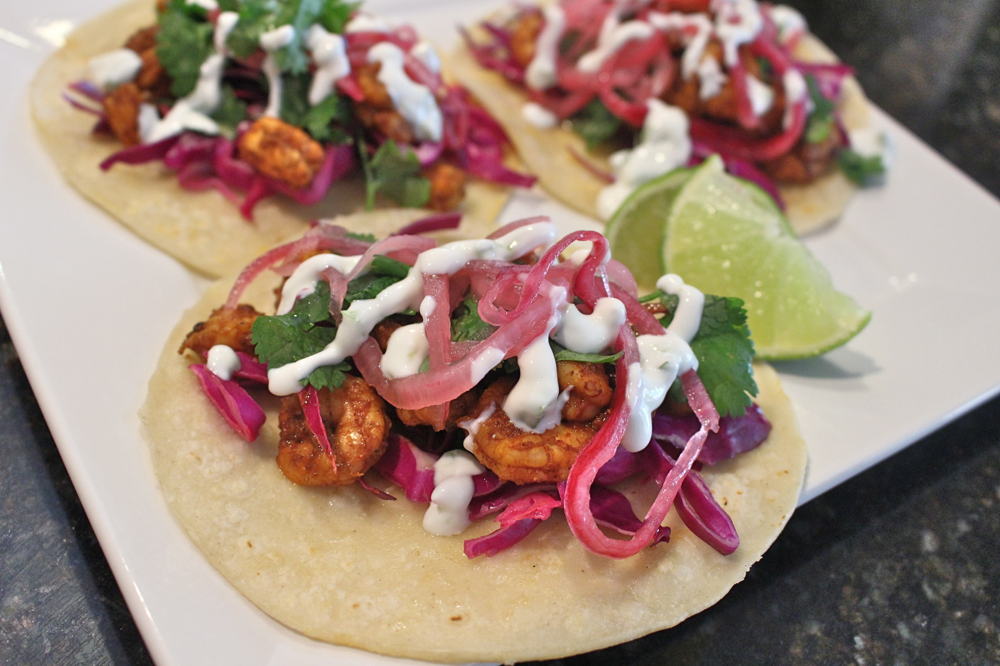

Spicy Shrimp Tacos

Background
My fiance loves when I make this dish. Well she just loves when I make tacos in general. This is probably her favorite though! We got this recipe, as well as many others, from Danny Trejo's cookbook. Enjoy with the side of your choice
Ingredients
- 8 tortillas
- 1 pound of peeled U15 Shrimp
- 2 tablespoons of chipotle chilis in adobo sauce
- 2 teaspoons of cumin
- 2 teaspoons of chili powder
- 2 teaspoons of garlic powder
- salt and pepper to taste
- 1/4 cup of cilantro (for topping)
- 1 lime (for topping)
- 1/2 cup of pickled red onion (for topping)
Steps
- In a large bowl mix the shrimp with the adobo sauce,cumin, chili powder, garlic powder, salt, and pepper. If you want extra spice, add in a chopped chipotle pepper
- Heat a cast iron pan with 2 tablespoons of vegetable oil over medium high heat
- Place the shrimp in the hot pan and cook about 3 minutes per side. The sauce will start to carmelize turning a dark brown color
- While the shrimp is cooking, heat the tortillas in the microwave for 15-20 seconds
- Add the cooked shrimp to the tortilla. Add your toppings of choice. (My fiance loves to add cojita cheese as well)
- Enjoy!